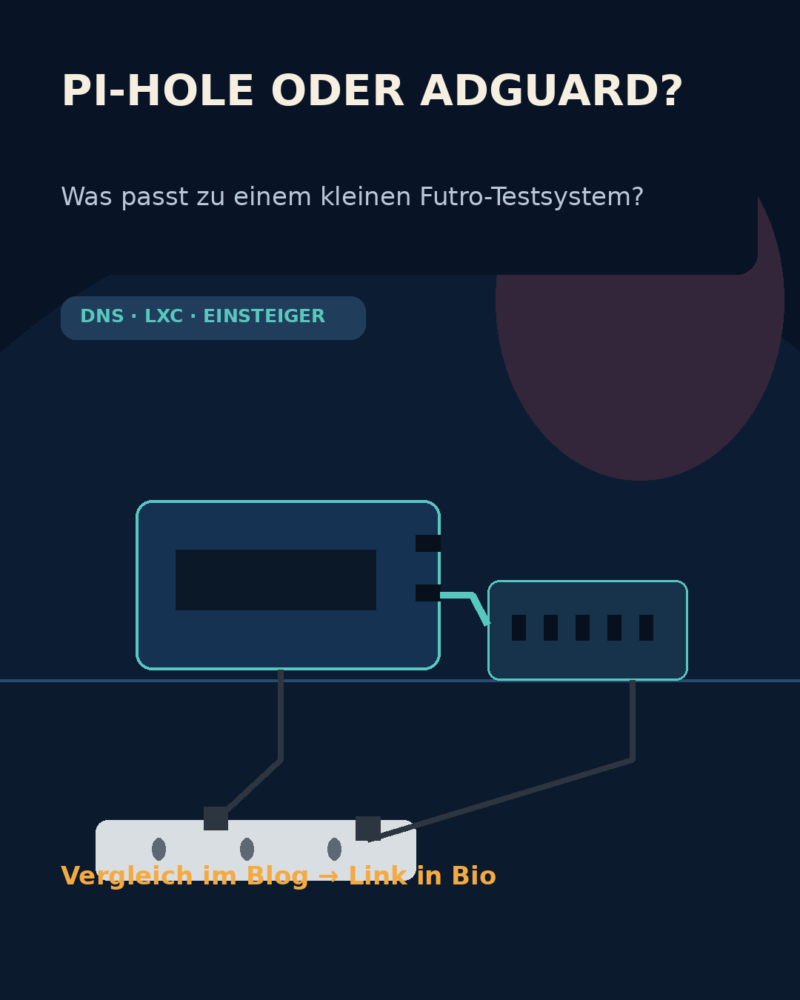
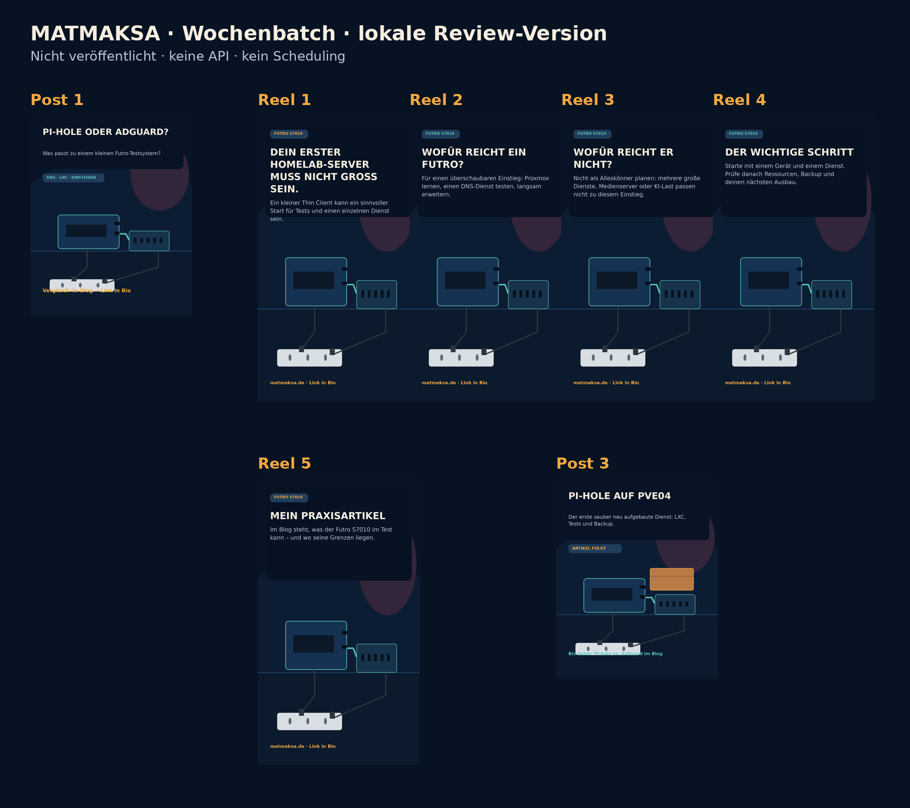
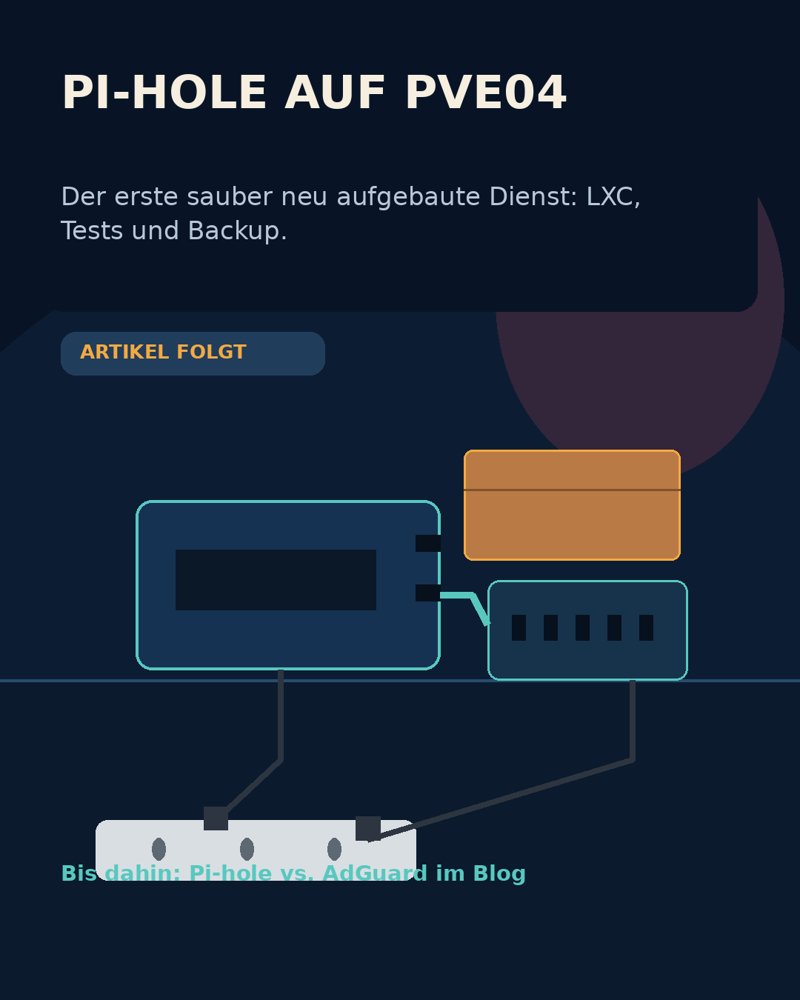

Post 1 · Einzelbild

Thema: Pi-hole oder AdGuard?
Blogziel: veröffentlichter Vergleich
CTA: Vergleich im Blog → Link in Bio
Plausibilität: PASS · nicht freigegeben


Thema: Pi-hole oder AdGuard?
Blogziel: veröffentlichter Vergleich
CTA: Vergleich im Blog → Link in Bio
Plausibilität: PASS · nicht freigegeben
Thema: Futro S7010 als ruhiger Einstieg.
Blogziel: veröffentlichter Praxisartikel
CTA: Praxisartikel → Link in Bio
Ohne Ton verständlich · 5 Szenen · Plausibilität: PASS · nicht freigegeben

Thema: Pi-hole auf PVE04.
Strategie: Artikel folgt; bis dahin nur Brücken-CTA zum veröffentlichten Vergleich.
CTA: Pi-hole vs. AdGuard im Blog
Keine Preview-Verlinkung · Plausibilität: PASS · nicht freigegeben
Siehe week-batch.md im lokalen Asset-Ordner. Alle Posts enthalten Caption, CTA, Zielartikel, Alt-Text, maximal sieben Hashtags, Prompt, Negativanforderungen und QA-Status.